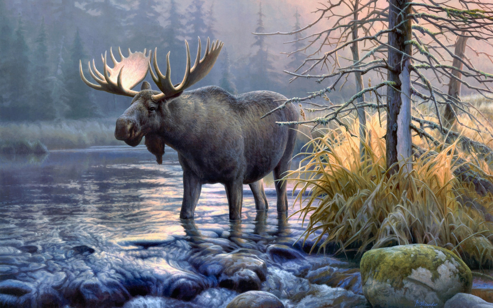

EL ALCE
Resenia del Autor
 Edgar Allan Poe nació en Boston, Estados Unidos, el 19 de enero de 1809. Sus padres murieron cuando era niño y fue recogido por un matrimonio adinerado de Richmond, Virginia, aunque nunca fue adoptado oficialmente.
Edgar Allan Poe nació en Boston, Estados Unidos, el 19 de enero de 1809. Sus padres murieron cuando era niño y fue recogido por un matrimonio adinerado de Richmond, Virginia, aunque nunca fue adoptado oficialmente.
Se conviritó en un escritor, poeta, crítico y periodista romántico, y es reconocido como uno de los maestros universales del relato corto, del cual fue uno de los primeros representantes en Estados Unidos. Fue renovador de la novela gótica, recordado especialmente por sus cuentos de terror.
A Edgar Allan Poe también se le considera como el inventor del relato detectivesco y contribuyó con varias obras al género emergente de la ciencia-ficción. Entre las mejores obras del escritor estadounidense destacan El Cuervo, Annabel Lee, El pozo y el péndulo, El barril de amontillado, entre otras.
Edgar Allan Poe murió el 7 de octubre de 1849, a los 40 años de edad. Aunque se especuló con que la causa de la muerte tuvo que ver con el alcohol y un fallo cardíaco, nunca se esclarecieron los verdaderos motivos.
Critica
 Este cuento de Edgar Allan Poe, es una narracion extraordinaria, que nada tiene que ver con las historias de corte fantastico y terror que lo caracterizan
"El Alce", conocido tambien como "Morning On The Wissahiccon", es una descripcion turistica de las hermosuras paisajisticas del entorno natural de Wissahickon Creek, ubicado en Pennsylvania.
Hace critica a los viajeros del mundo que unicamente se mueven en los mas populares escenarios naturales y visitan los lugares mas conocidos, sin imaginar las maravillas reconditas que existen en el planeta. Viajeros que no se atreven a enfrentarse a las dificultades de acceder a tan indescriptibles maravillas naturales
Lo mas interesante del cuento es la descripcion sobre la civilización actual que quita espacio a la naturaleza y a lo salvaje, alcanzando tal punto defensivo con la aparición simbólica de un alce doliente y nostálgico.
En principio el Alce se muestra con una figura de soledad y a la defensiva, posteriormente se revela como una animal domado y paseado por un esclavo, seguramente alejado de toda vida natural y fuera de su habitat, lo que hace reflejo de lo poco que nos importa hoy en dia la vida de los seres vivos, lo cual los hace indefensos ante la "inteligencia humana"
Comentarios
Glosario
- Disencion: Falta de acuerdo entre dos o más personas o falta de aceptación de una situación, una decisión o una opinión
- Litoral: Franja de terreno que está junto al mar.
- Dilatado: Que es muy extenso, vasto o numeroso.
- Errado: Erróneo, [persona] Que comete una equivocación u obra incorrectamente.
- Indecible:Que es tan grande, intenso o extraordinario que no puede ser expresado o descrito, en especial referido a una
emoción o un sentimiento.
- Detrimiento: Daño moral o material en contra de los intereses de alguien.
- Topico: [opinión, idea, expresión] Que se usa y se repite con mucha frecuencia en determinadas circunstancias.
- Opulento: Que es muy abundante.
- Parangon: Un parangón, por lo tanto, surge al comparar dos realidades, sucesos, objetos
- Loteadas: Dividir una cosa en lotes para venderlos o repartirlos.